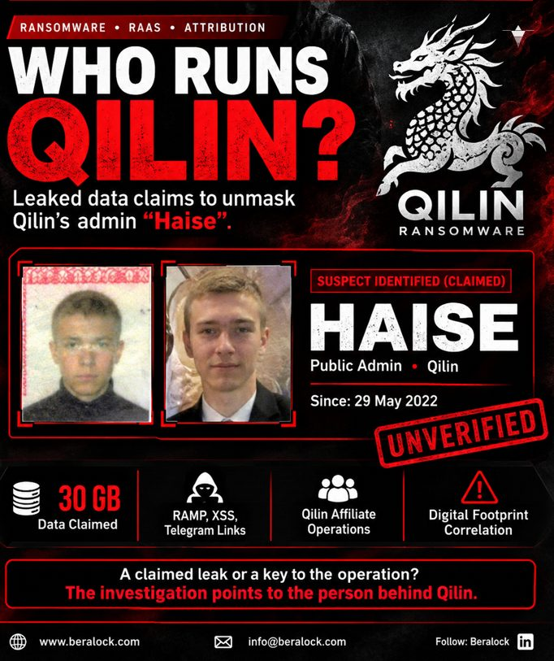
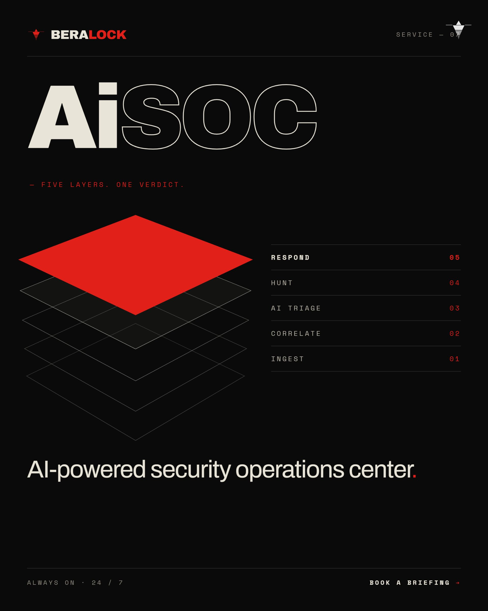
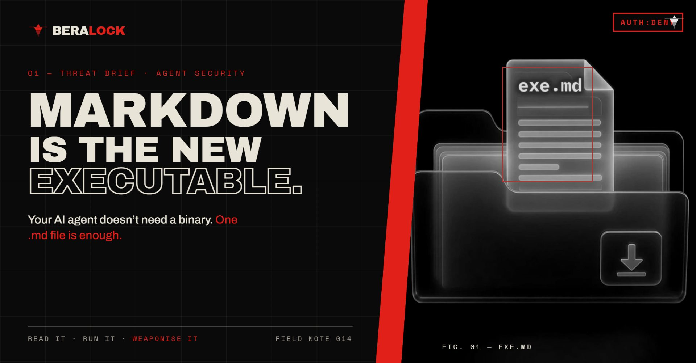
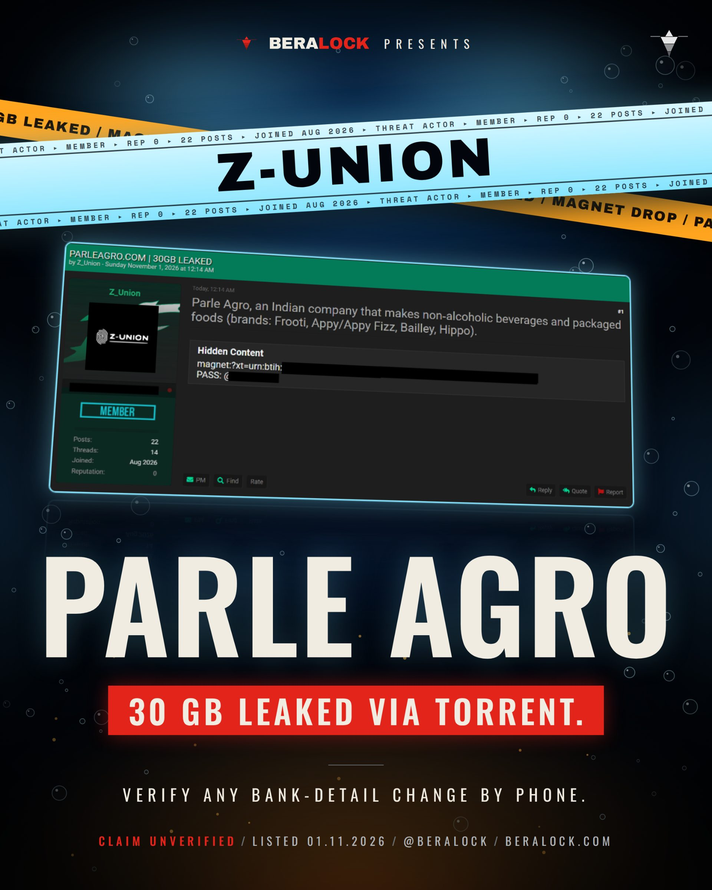
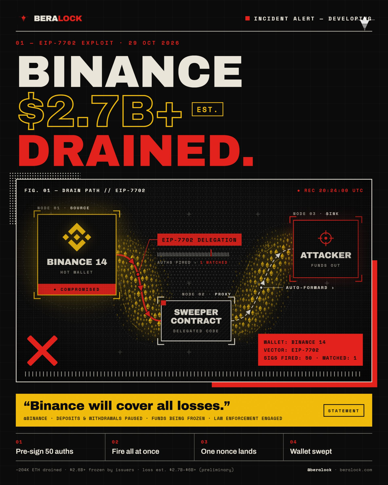
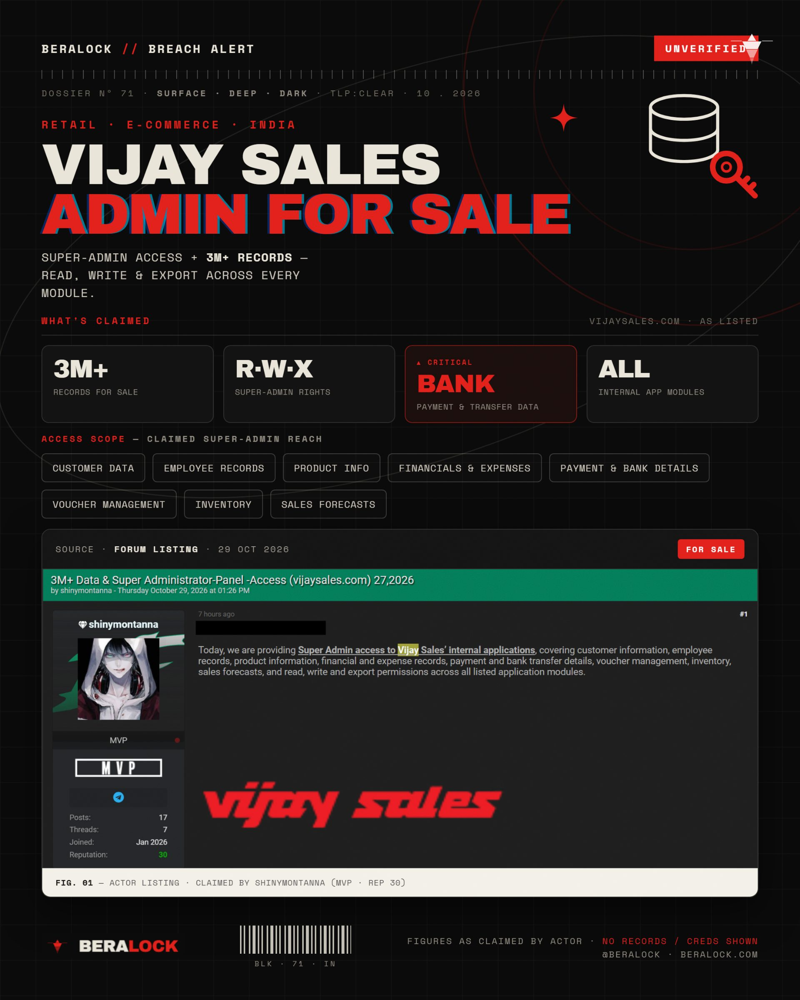
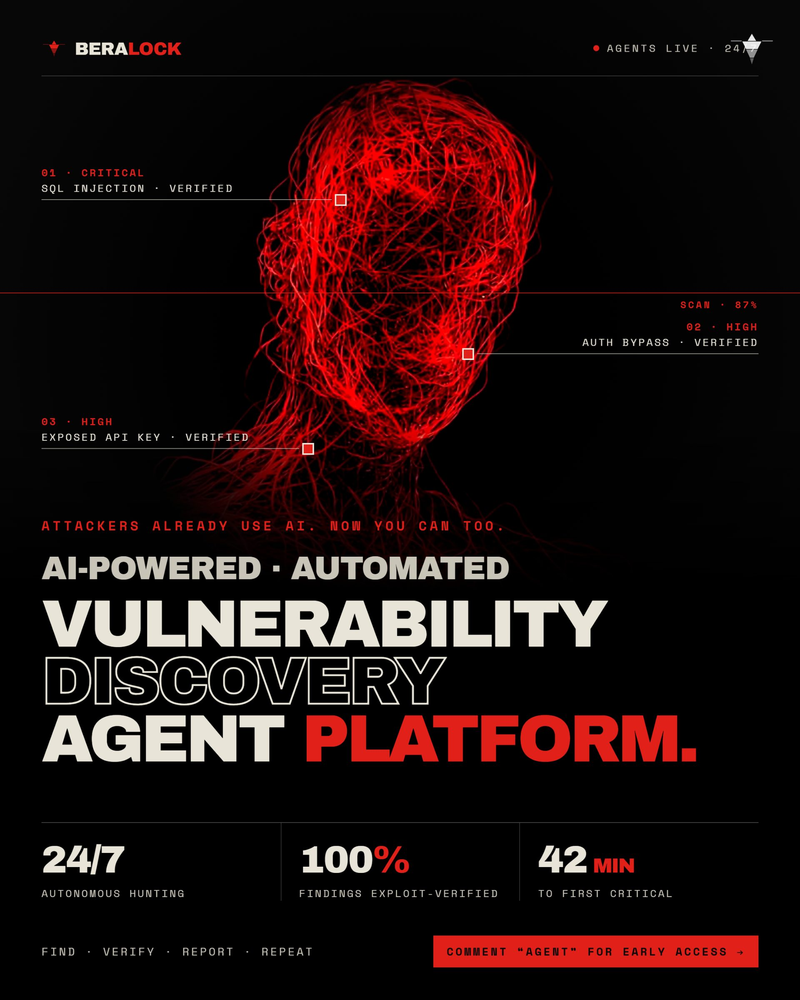
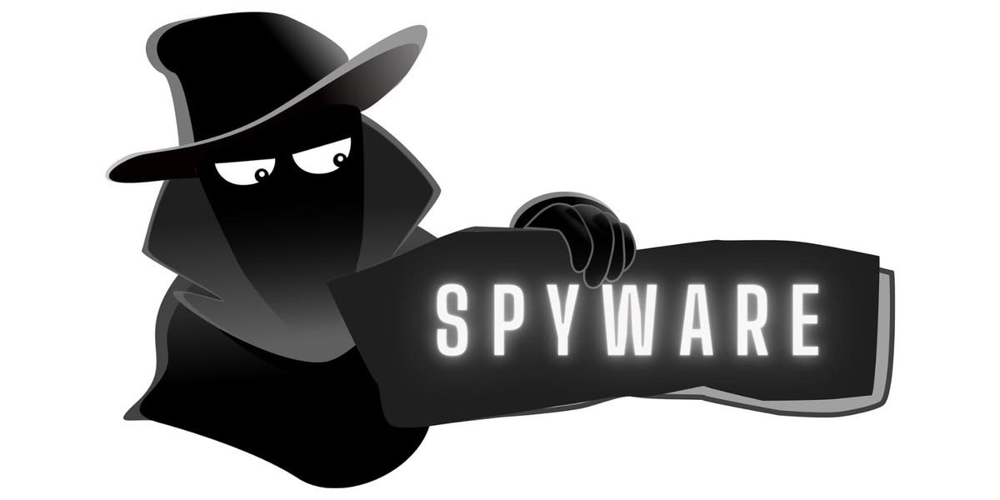

Dossier № 09 — Surface · Deep · DarkLive intake · analyst-led SOC
01— Threat intel · live feed
What we're
seeing right now.
Daily threat intelligence sourced by NorthCypher analysts across the surface, deep and dark web, published the same day we surface it. Filter the feed to what matters to you.
 FIG. 04
FIG. 04CSIR-Associated Toxicology Institute Allegedly Targeted in PII Data Leak Claim
 FIG. 05
FIG. 05Android ‘SMS of Death’ Exploit Can Remotely Crash Unpatched Smartphones Without User Interaction
Latest04
01
RANSOMWARE
02Who Is Behind Qilin Ransomware? Investigation Links Public Administrator Haise to a Network of Underground Accounts
Nov 6, 2026
AI
03Your SOC Is Getting an AI Brain Meet AiSOC, an Open-Source AI Security Operations Center
Nov 4, 2026
AI
04Markdown Is the New Executable : Hackers Can Hijack AI Agents Through Your Downloads Folder
Nov 3, 2026
DARK WEB
Parle Agro Allegedly Listed in 30 GB Data Leak Claim by Z-Union
Nov 2, 202602 — ArchiveOlder intel
 FIG. 06
FIG. 06A Whole Bank on a Six-Day Clock: Reading the AU Small Finance Bank Leak Claim

FIG. 0750 Signatures, One Match: How the Binance EIP-7702 Hack Actually Worked - and Why the Protocol Didn't Fail

FIG. 08Not a Data Dump — a Set of Keys: The Vijay Sales "Super-Admin for Sale" Listing

FIG. 09AI Finds Vulnerabilities, Generates PoCs & Verifies Exploits - Meet VulnHunter

FIG. 10Scan the Scanner: Why "Free Spyware Detectors" Deserve More Suspicion Than the Spyware
 FIG. 11
FIG. 11